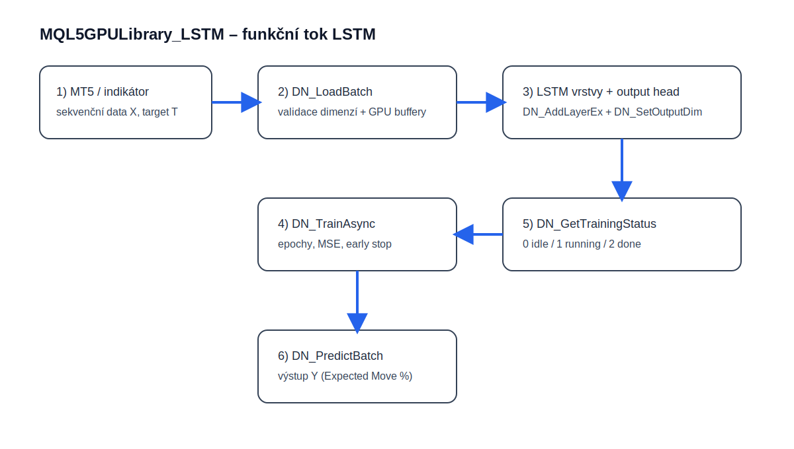

Architektura a tok dat
Model pracuje se sekvencemi o délce seq_len, používá sloupcově orientované matice (column-major) pro cuBLAS a drží trénovací data v persistentních GPU bufferech. Každá instance modelu má vlastní handle, vlastní synchronizační primitiva a bezpečný lifecycle při uvolnění.
Video walkthrough projektu
Stavy asynchronního tréninku
Kompletní DLL API (exporty)
Ukázka orchestrace
int h = DN_Create();
DN_SetSequenceLength(h, 32);
DN_SetMiniBatchSize(h, 64);
DN_AddLayerEx(h, 16, 64, 0, 0, 0.10);
DN_AddLayerEx(h, 64, 32, 0, 0, 0.05);
DN_SetOutputDim(h, 1);
DN_LoadBatch(h, X, T, batch, 512, 1, 0);
DN_TrainAsync(h, 120, 0.0008, 0.001, 0.00001);
// poll DN_GetTrainingStatus(...), then DN_PredictBatch(...)
Autor projektu
Tomáš Bělák — GitHub repozitář projektu MQL5GPULibrary_LSTM